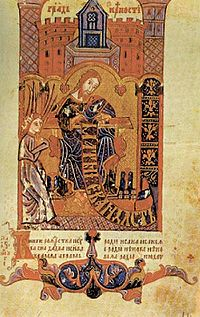

History of tombstones

Tombstones are the product of the influence of the Bosnian Church and their followers. The Bosnian Church had great influence throughout the Balkan Peninsula, and they encouraged the practice of various rituals and traditions, which included burying people under these tombstones. Because of the Bosnian Church’s enormous influence on the common folk, these religious traditions turned into a habit, resulting in people, regardless of their religion, being buried in the same way during the existence of the Bosnian kingdom. Even after the destruction of the Bosnian kingdom, stećci continued to be made, thanks to the Ottoman Turks fascination of them, resulting in Muslim versions of stećci, called Nišans.